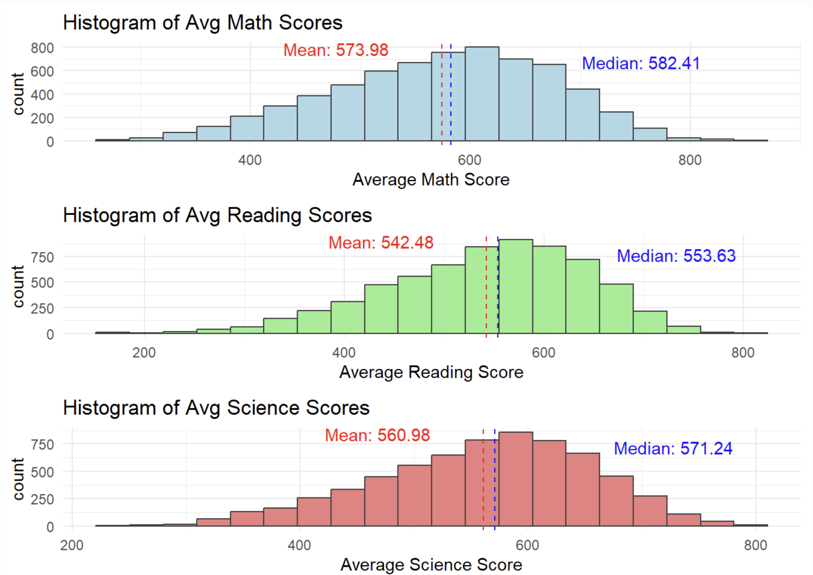
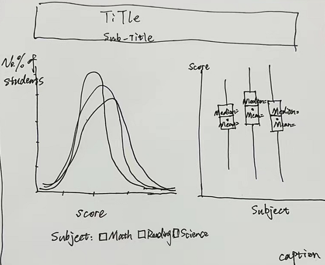
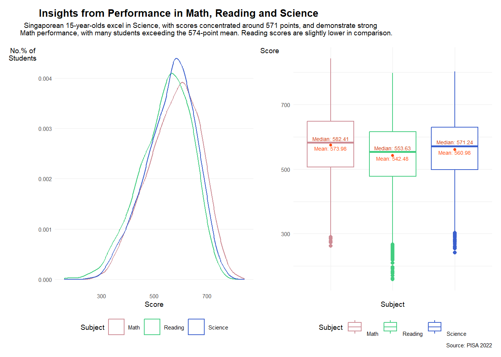
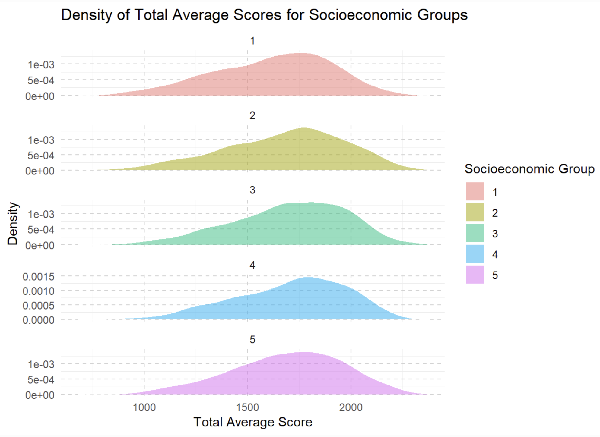
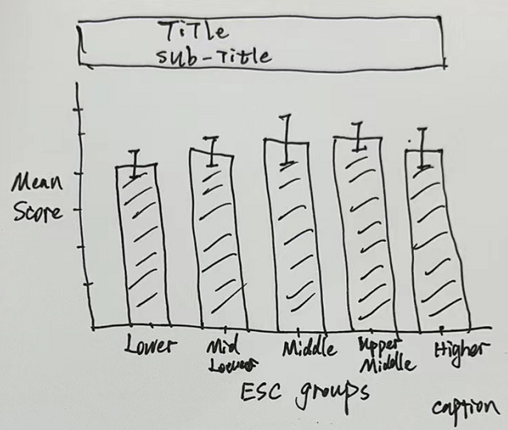

Code
pacman::p_load(ggrepel, ggthemes,
hrbrthemes, patchwork,
tidyverse, haven, gridExtra,
ggplot2, plotly, ggridges) Wei Yanrui
January 28, 2024
January 28, 2024
In this take-home exercise, I will continue the topic on take-home exercise 1, select one of the outcome from my classmates, critic it in terms of clarity and aesthetics, prepare a sketch for the alternative design and remake the original design by using relevant R packages.
Find the works I select from one of my classmates: Take-home Exercise 1 from ZHENG KAIXIN
First of all, I’ll follow the steps my classmate has done.
mathematics <- stu_qqq_SG[, c("PV1MATH", "PV2MATH", "PV3MATH", "PV4MATH", "PV5MATH", "PV6MATH", "PV7MATH", "PV8MATH", "PV9MATH", "PV10MATH")]
reading <- stu_qqq_SG[, c("PV1READ", "PV2READ", "PV3READ", "PV4READ", "PV5READ", "PV6READ", "PV7READ", "PV8READ", "PV9READ", "PV10READ")]
science <- stu_qqq_SG[, c("PV1SCIE", "PV2SCIE", "PV3SCIE", "PV4SCIE", "PV5SCIE", "PV6SCIE", "PV7SCIE", "PV8SCIE", "PV9SCIE", "PV10SCIE")]
school <- stu_qqq_SG[, c("CNTSCHID")]
gender <- stu_qqq_SG[, c("ST004D01T")]
school_education <- stu_qqq_SG[, grep("ST005|ST007", names(stu_qqq_SG), value = TRUE)]
vocational_training <- stu_qqq_SG[, grep("ST006|ST008", names(stu_qqq_SG), value = TRUE)]
home_possessions <- stu_qqq_SG[, grep("ST250|ST251|ST253|ST254|ST255|ST256", names(stu_qqq_SG), value = TRUE)]# Calculate mean values
Avg_Math <- rowMeans(mathematics, na.rm = TRUE)
Avg_Reading <- rowMeans(reading, na.rm = TRUE)
Avg_Science <- rowMeans(science, na.rm = TRUE)
# Calculate total sum of mean
Total_Avg <- rowSums(cbind(Avg_Math, Avg_Reading, Avg_Science), na.rm = TRUE)
# Calculate median values
Median_Math <- apply(mathematics, 1, median, na.rm = TRUE)
Median_Reading <- apply(reading, 1, median, na.rm = TRUE)
Median_Science <- apply(science, 1, median, na.rm = TRUE)
# Calculate total sum of mean
Total_Median <- rowSums(cbind(Median_Math, Median_Reading, Median_Science), na.rm = TRUE)combined <- cbind(stu_qqq_SG["CNTSTUID"], Avg_Math, Avg_Reading, Avg_Science, Total_Avg, Median_Math, Median_Reading, Median_Science, Total_Median, school, gender, school_education, vocational_training, home_possessions)
colnames(combined)[colnames(combined) == "CNTSCHID"] <- "School"
colnames(combined)[colnames(combined) == "ST004D01T"] <- "Gender"School <- combined$School
Gender <- combined$Gender
school_education <- combined[, grep("ST005|ST007", names(combined), value = TRUE)]
vocational_training <- combined[, grep("ST006|ST008", names(combined), value = TRUE)]
home_possessions <- combined[, grep("ST250|ST251|ST253|ST254|ST255|ST256", names(combined), value = TRUE)]# Calculate sum values
sum_school_education <- rowSums(school_education, na.rm = TRUE)
sum_vocational_training <- rowSums(vocational_training, na.rm = TRUE)
# Calculate sum of home possessions
home_possessions <- home_possessions %>%
mutate(sum_home_possessions = rowSums(select(., starts_with("ST251Q"), -matches("ST251Q05JA|ST251Q08JA")), na.rm = TRUE))
sum_home_possessions <- home_possessions$sum_home_possessions
# Calculate socioeconomic status
socioeconomic_status <- rowSums(cbind(sum_school_education, sum_vocational_training, sum_home_possessions), na.rm = TRUE)
combined <- combined %>%
mutate(socioeconomic_group = ntile(socioeconomic_status, 5))The original design is shown as below:  The 3 histograms show the distribution of average score of Math, Reading and Science.
The x-axis scales on the three graphs are not aligned. While the Average Math Score has the highest mean and median values, the lines representing the mean and median are positioned to the left when compared to the lines for Average Reading Score and Average Science Score.
The Y axis title named as “Count” without specifying what is being counted might be a little vague.
Graph title could be enhanced to be more eye-catching for readers. Sometimes, an attention-grabbing title together with a descriptive subtitle can bring better understanding to readers.
In comparison to the graphs, the font size of x and y axis title is slightly larger, which might somehow divert people’s attention away from the graphs.
In this plot, 3 histograms are arranged vertically, leading to compression of each histogram. As a result, the differences in histogram presentations, including the comparison between the median and mean reference lines, appear less distinct due to the compression.
I try to retain all the information my classmate want to convey (distribution graph, as well as key statistics: mean and median) and change the layout to better present all the parts: put 3 distributions together in one graph and show the statistics in another graph beside it by using boxplot.

To display 3 density distributions in one graph, I need to create a new column called “Subject” to capture all the subject names of each student and a new column called “Score” to capture all the score values of each student. I use pivot_longer() to convert the dataframe from wide format into long format.
median_values <- aggregate(Score ~ Subject, data = score_combined, FUN = median)
mean_values <- aggregate(Score ~ Subject, data = score_combined, FUN = mean)
plot1 <- ggplot(data=score_combined,
aes(x = Score,
colour = Subject)) +
geom_density()+
labs(x = "Score",y="No.% of\nStudents",
title = "Insights from Performance in Math, Reading and Science",
subtitle= "Singaporean 15-year-olds excel in Science, with scores concentrated around 571 points, and demonstrate strong\nMath performance, with many students exceeding the 574-point mean. Reading scores are slightly lower in comparison.\n")+
theme_minimal(base_size = 7)+
theme(legend.position = "bottom",
panel.grid.major.x = element_blank(),
panel.grid.minor.x = element_blank(),
panel.grid.minor.y = element_blank(),
axis.title.y= element_text(angle=0),
plot.title = element_text(size=10, face="bold", hjust = 0.2),
plot.subtitle = element_text(size=7, hjust = 0.2))+
scale_color_manual(
breaks = c("Avg_Math", "Avg_Reading", "Avg_Science"),
labels = c("Math", "Reading", "Science"),
values = c("lightpink3","seagreen3","royalblue3"))
plot2 <- ggplot(data=score_combined,
aes(y = Score, x= Subject,
colour = Subject)) +
geom_boxplot() +
stat_summary(geom = "point",
fun.y="mean",
colour ="orangered",
size=1)+
geom_text(
data = median_values,
aes(x = Subject, y = Score, label = paste("Median:",round(Score, 2))),
vjust = -0.5,
colour = "orangered3",
size = 1.8)+
geom_text(
data = mean_values,
aes(x = Subject, y = Score, label = paste("Mean:",round(Score, 2))),
vjust = 1.2,
colour = "orangered",
size = 1.8)+
theme_minimal(base_size = 7)+
labs(caption = "Source: PISA 2022")+
guides(color = guide_legend(
title = "Subject",
label.hjust = 0,
label.vjust = 0,
nrow = 1))+
theme(legend.position = "bottom",
axis.text.x = element_blank(),
axis.title.y= element_text(angle=0))+
scale_color_manual(
breaks = c("Avg_Math", "Avg_Reading", "Avg_Science","Median:","Mean:"),
labels = c("Math", "Reading", "Science","Median:","Mean:"),
values = c("lightpink3","seagreen3","royalblue3","orangered3","orangered"))
plot1+plot2
The original design is shown as below:  This graph shows the distributions of average score of all the 3 subjects across all socioeconomic groups.
Y axis is labelled as something like “1e-03”, “5e-04” might cause confusing to readers.
The socioeconomic hierarchy is divided into 5 levels: 1-5. It might be more user-friendly to rename them by verbal description such as “Lower Group”, “Mid-Lower Group”, “Middle Group”, “Upper-Middle Group”, “Higher Group”.
Graph title could be enhanced to be more eye-catching for readers. Sometimes, an attention-grabbing title together with a descriptive subtitle can bring better understanding to readers.
Since the graphs of 5 groups are listed vertically and slightly similar at the first glance, it would be a little hard for readers to tell the difference by tracing the movement of the peak point of 5 graphs.
I try to convert the graphs by showing the 90% confident interval of the mean of each graph. In addition, I will use interactive tool to show the value of mean so that the slight difference might be more distinct by directly presenting the mean and showing the value.

Before plotting, I need to rename the socioeconomic groups.
pacman::p_load(ggiraph, plotly,
patchwork, DT)
tooltip <- function(y, ymax, accuracy = .01) {
mean <- scales::number(y, accuracy = accuracy)
sem <- scales::number(ymax - y, accuracy = accuracy)
paste("Mean scores:", mean, "+/-", sem)
}
gg_point <- ggplot(data=combined,
aes(x = socioeconomic_group)) +
stat_summary(aes(y = Total_Avg,
tooltip = after_stat(
tooltip(y, ymax))),
fun.data = "mean_se",
geom = GeomInteractiveCol,
fill = "light blue") +
stat_summary(aes(y = Total_Avg),
fun.data = mean_se,
geom = "errorbar", width = 0.2,
size = 0.2)+
coord_cartesian(ylim = c(0,2000))+
labs(y= 'Mean\nScore', x= 'Socioeconomic Group',
title = "Educational Equity is Bridging Socioeconomic Divides in Education",
subtitle= "Over 6,000 15-year-old Singaporean students across socioeconomic groups displayed consistent academic\nperformance with the Upper-Middle Group slightly outshining the rest yet the Lower Group lagging a little.",
caption = "Source: PISA 2022")+
theme_minimal(base_size = 10)+
theme(plot.title = element_text(size=15, face="bold", hjust = 0.5),
plot.subtitle = element_text(size=10, hjust = 0.5),
axis.title.y = element_text(angle = 0, vjust = 0.5),
panel.background = element_blank(),
panel.grid.major = element_line(color = "grey90"),
panel.grid.minor = element_blank(),
plot.caption = element_text(hjust = 1))
girafe(ggobj = gg_point,
width_svg = 8,
height_svg = 8*0.618)